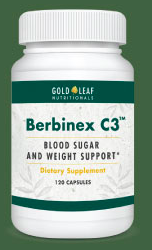

Could the secret for perfect blood sugar have been discovered in...
Delicious...
Gooey...
Chocolate...
According to a recent animal study published in the European Journal of Lipid Science and Technology, the answer is yes!
Here’s how:
Scientists have discovered keeping your blood sugar healthy boils down to a simple enzyme in your body.
If this enzyme is shut down, that leads to…
✓ Concerning insulin levels…
✓ Struggling to keep your HbA1c in the normal range…
✓ Or frustration with your belly fatand fatigue…
On the other hand, if this enzyme is active in your body…
You can have PERFECT blood sugar, everytime you check...
You'll marvel at your steady, low, natural insulin levels...
You might even get a thumbs up from your doctor, after confirming your HbA1c is the best it’s been in years…
And also hear from your doctor that whatever you’ve been doing to lose those extra pounds: “Keep it up, because it’s working like crazy!”
So what does this have to do with eating chocolate?
Simple… it turns out you can activate this enzyme by eating chocolate! Seriously!
If you’re skeptical, I completely understand. And why wouldn’t you be?
After all, if you’re concerned about your blood sugar… everyone out there is telling you something different…
You CAN now switch it back on
Even if you’re tired, out of shape, and have poor eating habits.
Your age doesn’t matter, either.
And when you do flip your AMPK on, you won’t believe the results…
You can keep your blood sugar healthy and stay sensitive to your natural insulin… so you can feel steady energy, look thin and trim…
...and stop stressing… because you know your numbers are in the normal range.
And the most incredible part is, it’s simpler than you think.
You can do this right in the comfort of your own home…
Let me repeat that… for any reason at all, simply request a refund and we’ll be happy to oblige.
And your guarantee NEVER expires.
You can request a refund any time in the future – it could be six months from now… a year… or even two!
This way, there’s no pressure… and no risk… when you try Berbinex C3 today.
So let’s do this: Fill out your shipping information on the next page.
Once you do, we’ll begin packing your shipment of Berbinex C3 and then we’ll rush it your way.
Just a few short days from now, you’ll receive a plain, brown box from USPS.
Carefully packed inside will be your initial supply of Berbinex C3.
I recommend you immediately bring your Berbinex C3 supply into your kitchen, open it up…
…and have it ready before your very next meal.
As you eat, the ingredients inside Berbinex C3 will begin working with your blood cells and muscles...
And before you know it…
Your AMPK will be activated, keeping your blood sugar perfect, and keeping YOU HEALTHY.
As time goes on, you’ll feel the effects all day long and see the changes in your mirror.
You’ll even ask yourself, “How did I ever live without Berbinex C3?”
And that’s an important question… so we want to make sure you’re never without the blood sugar balancing power of Berbinex C3.
Because if you stop taking Berbinex C3, there’s a very real chance your Master Metabolic Switch will turn right back off… and then it will all be for nothing.
So, today, through this special offer, we’re giving you free access to our Priority Pass program.
That means, whenever you’re about to run out of Berbinex C3, we’ll ship you out a fresh supply and simply bill the credit card you use today.
Not only that, you lock in today’s special low price. And we’ll even pick up the shipping cost.

ORDER NOW AND RECEIVE
FREE
SHIPPING
That’s right… you get FREE shipping on today’s order and all future Priority Pass orders.
Of course, you can cancel or change this program at any time just by calling our friendly team.
No hassle and complete convenience. That’s how we do business.
And no matter what, you take no risk at all. Your satisfaction is ALWAYS guaranteed.
So if you’re ready for perfect blood sugar levels and a healthy future… go ahead and click the button below now.
It will take you to our secure reservation page, where you can select your initial supply of Berbinex C3. You’ll also find a way you can save a bunch of money…
But do click the button now. I’ll see you on the other side… For Berbinex C3 and Gold Leaf Nutritionals, I’m Rachel Roane.
Click the button below now to reserve your own supply of Berbinex C3, with berberine, chromium and CardiaSlim®.
CardiaSlim® brand property blend of two plant extracts is a registered trademark of Laila Nutraceuticals and InterHealth Nutraceuticals, Benicia, CA 94510